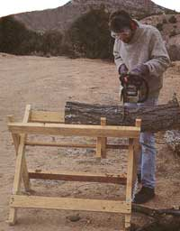
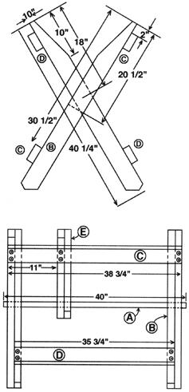
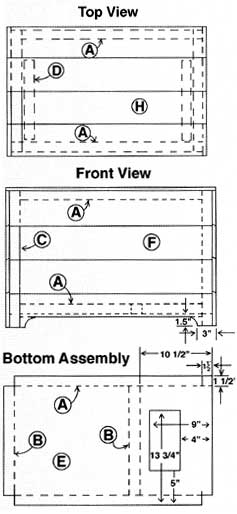
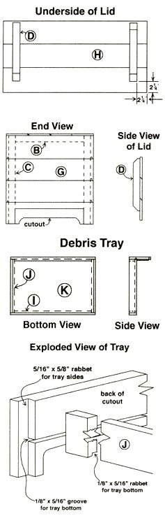
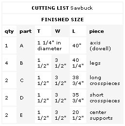
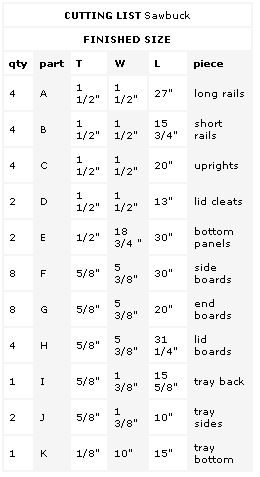
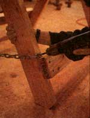
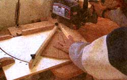

Construction is very straightforward. Cut the legs to length as shown in the diagram, and cut a 30° miter on the bottom end to provide flat footing for your sawbuck. I used an Angleguide with my radial arm saw, but you could also use a protractor and sliding T-bevel to mark this and make the cut with a circular saw. After cutting this angle, I flipped the piece over and used the same setup to lop off the points so the ends would be less likely to break. Then I cut a long taper on the upper ends of the legs as shown in the plans. This taper allows the larger logs to fit down into the cradle at a good working height.
Next cut the long crosspieces (C), short crosspieces (D), and center supports (E) to length. Stack the legs and clamp them to the workbench to drill the axis hole. Measure from the top end to locate the hole center and use a 1 1/4" spade bit. Drill through as many as you can; then use the one on top of the stack to locate the hole in the others. Do the same to drill the center supports (E), lining up the ends and clamping them in a stack under the first leg.
You'll need to enlarge the holes with a half-round bastard file so that they'll slip onto the axis. Don't make them too loosejust enough to fit onto the closet pole. Fit the two center supports onto the axis first; then add pairs of legs at each end. Position them so that about an inch of closet pole sticks out at either end. There's no need to pin the axis; a friction fit will do. The crosspieces will hold the unit together.
Lay the assembly on the floor, and position a long crosspiece (C) 2" from the ends. Screw this to the two outermost legs and one of the center supports. Attach a short crosspiece (D) near the bottom of the two inside legs. Now turn the unit over and screw on the remaining crosspieces. This time use a short one on top, attaching it to the inside legs and the unattached center support. Screw the long one to the outside legs near the bottom.
Unfold the assembly and stand it up so that the mitered ends of the legs sit flat on the floor. Cut two 18" lengths of chain, and attach them to the legs with washers and screws driven just above the bottom crosspieces. This will stop them in place when you set up to cut wood but still allow the sawbuck to fold flat so you can hang it out of the way on the garage wall during the months when you're not making firewood.
A Rolling Rustic Firewood Box
With your arms loaded up with logs from the wood pile, you struggle to open the door. The receptacle for your burden is in view just across the room. The biggest question you have as you balance your heavy, tottering armful of stove fuel is, "How do I get it there without tracking the snow in?" My firewood box has casters neatly hidden underneath so I can roll it to the door and fill it from the threshold. It also features a cleanout hole in the bottom that empties into a debris tray, which slides out like a drawer from the end. I just push the bark, dirt, and chips into the hole and then dump the tray in the yard. If there weren't snow on the ground, it would make a good mulch.
Gathering Wood
I bought eight 1 x 6 rough cedar fence boards to give my firewood box a rustic look and a couple of 2 x 4s for the frame members. The bottom is made from a pair of 1/2" plywood panels separated by frame pieces that create a space for the debris tray. You'll also need a couple of interesting hinges and four 1 1/2" casters (buy sturdier casters than those shown in my photo-and if your floor is carpeted, get some that will roll on the rug).
Begin the project by making the 2 x 4s into 1 1/2" x 1 1/2" frame members (A, B, C, and D) cut to the different lengths given in the cutting list. The next step is to construct the sandwich that comprises the bottom. Cut the bottom panels (E) to size, and notch the corners to fit around the uprights. Use a saber saw to cut out the cleaning hole in one of the bottom panels as indicated in the plans. Now glue and screw two of the long rails (A) and two of the short rails (B) in place between the panels as shown. You'll build the sides of your box around this base assembly.
Ship Shaping the Sides
I think sawers have "the new kid" cut fence boards after lunch on a bad day; the planks just don't come out very straight and true. But I like the rugged look they lend to projects like this, so I've figured out how to work with their inconsistent dimensions: Don't care. Wing it. It helps to go through the stack and select boards that are fairly straight with tight knots and no cracks. Avoid cupped planks at all costs, because they'll just break when you try to screw them down to a fiat surface. As always, it's a good idea to have a couple extras on hand.
Cut them to the lengths given in the cutting list for parts F, G, and H. The average thickness of my 1 x 6 planks was 5/8" and the widths averaged 5 3/8". You may need to adjust the dimensions shown in the plans to accommodate the wood you buy. I cut shiplap joints (an overlapping rabbet joint used in boatbuilding) on the plank edges that abut other planks-not because I was concerned about the seaworthiness of my firewood box, but because it would conceal gaps between the uneven edges of the boards. To do this, arrange the four boards that comprise one side, and mark the edges for rabbeting, leaving the edges that don't meet other boards (such as the top edge of the side) unmarked.
Put'" worth of dado cutters on your table saw, and set it to a depth equal to just a bit more than half the thickness of your average fence board. Cover the table saw fence with a wooden auxiliary fence so you can position it right next to the blade, and rabbet the marked edges. Cut shiplap joints on the planks for the top as well, but leave the back edge of the third board and both edges of the fourth board unrabbeted. The final step before assembling all this kindling is to cut the relief on the lower planks.
Clamp together the two bottom side boards (F) and the two bottom end boards (G) and cut the reliefs as shown, using a saber saw. Now attach the side boards to the uprights (C). When you have two completed sides, attach them to the bottom assembly, making sure there's enough clearance for the casters. I found it helpful to use the short rails (B) to support the side assemblies while I drove the screws. Installing those short rails is the next step; simply replace the short screw holding the fence board to the upright with one that's long enough to grab the short rail. Glue and screw the two remaining long rails (A) along the top of the side boards (F). Now you can attach the four boards (G) that make up one end.
Before you attach the boards to the other end, cut out the portion of the lower end board that will serve as the front of the debris tray. Lay the box with its unfinished end up, position the lower board, and mark it where the bottom meets it. Because the bottom panel is thick, you need to make a second line '/" below the first. Mark a pair of perpendicular lines that correspond to the width of the opening, and cut out this portion of the plank. In order to use the cutout for the front of the tray, you need to make a plunge cut with the saber saw.
This will keep the sides and corners of the opening and the cutout straight and square. Tip the tool up onto the front of its base and start it running; then slowly lower the blade into the wood. Cut the tray back (I) and sides (J) from some scrap wood, and rabbet the ends of the back and the cutout to accept the tray sides. Make the tray bottom (K) from 1/8" plywood (a scrap of wall paneling works well).
Fit it into a groove cut on the back of the cutout and a rabbet along the bottom of the other tray parts. Glue and nail this simple drawer together, and fit it into the space between the bottom panels. Before attaching the lid, turn the box over and install the casters.
Putting a Lid on It
Miter the ends of the lid cleats (D) as shown in the plans. Lay the three shiplapped lid boards (H) upside down on your workbench and mark the position for the cleats. Clamp them in place and flip the assembly over to drive in the screws. Now set the lid in place and position the last plank. Mark and rip this to width and glue and screw it to the upper rail. Install the hinges directly over the cleats.
The box doesn't need any sort of finish (that's the best part about using rough wood) but it's a good idea to break the corners with some rough sandpaper, or use a rasp to ease the edges and add to the worn, rustic look. With that done, the easy work is out of the way; now it's time to start cutting and splitting those BTUs to fill the box.
|
 Attach a pair of chains to the sawbuck legs to keep them from spreading too far |
 Cut a long taper on the top inside surface of the uprights to accommodate large-diameter logs |
 |
|
 |
 |
 |
|
 |
 |
|